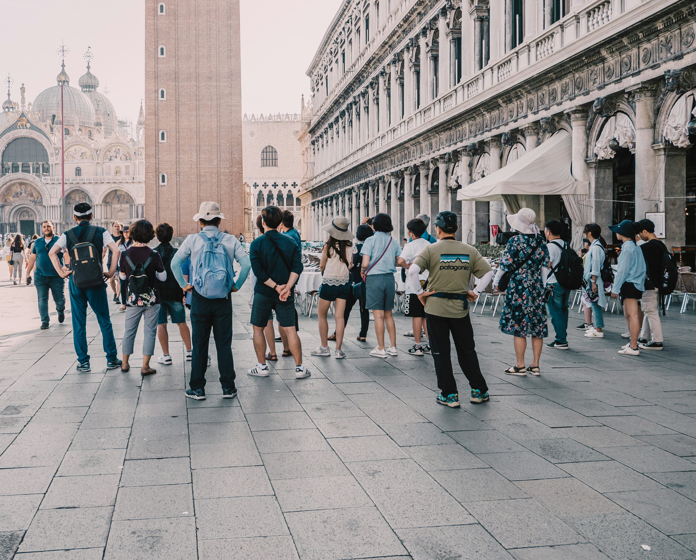

London, UK

11/12/2024 - 11/3/2025



Brief
England, part of the United Kingdom, is a country rich in history and culture. It's known for its iconic landmarks like the Tower of London, Buckingham Palace, and the historic city of Bath. England has a diverse landscape, from the rolling hills of the Cotswolds to the rugged coastline of Cornwall. London, the capital, is a global city with a vibrant arts scene, world-class museums, and a mix of modern and historic architecture. England is also famous for its contributions to literature, music, and sports, particularly football and cricket. Whether you're exploring the countryside or the bustling cities, England offers a unique blend of tradition and modernity.
England's cultural contributions are immense. It is the birthplace of Shakespeare, whose works continue to influence literature and theater worldwide. The music scene has produced legendary bands like The Beatles and The Rolling Stones, shaping the global music landscape.
The English culinary scene has evolved significantly, offering a diverse range of cuisines. Traditional dishes like fish and chips, roast dinners, and afternoon tea remain popular, while vibrant food markets and Michelin-starred restaurants showcase the country's culinary innovation.
Sports play a significant role in English life, with football being the most popular. The Premier League is one of the most-watched football leagues globally. Cricket, rugby, and tennis also have a strong following, with events like Wimbledon drawing international attention.
England's festivals and events, such as the Notting Hill Carnival, Glastonbury Festival, and the Chelsea Flower Show, celebrate its diverse culture and creativity. The country's commitment to preserving its history is evident in its numerous museums, galleries, and heritage sites.
Whether you're exploring the bustling streets of London, the historic charm of York, or the coastal beauty of Cornwall, England offers a unique blend of tradition and modernity that captivates visitors and residents alike.
Expand